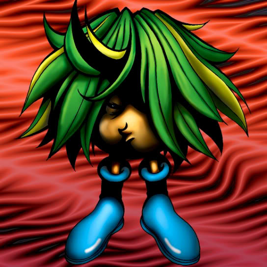

Griggle

STATS
ATK: 350
DEF: 300DECK COST
Deck Cost per Card: 7Fusion List (56 Possible Fusions)
- Griggle + Air Marmot of Nefariousness = Flower Wolf
- Griggle + Arlownay = Queen of Autumn Leaves
- Griggle + Armed Ninja = Bean Soldier
- Griggle + Armored Rat = Flower Wolf
- Griggle + Baby Dragon = Blackland Fire Dragon
- Griggle + Bone Mouse = Wood Remains
- Griggle + Corroding Shark = Pumpking the King of Ghosts
- Griggle + Dancing Elf = Queen of Autumn Leaves
- Griggle + Dragon Zombie = Pumpking the King of Ghosts
- Griggle + Eyearmor = Bean Soldier
- Griggle + Fiend's Hand = Wood Remains
- Griggle + Fire Reaper = Wood Remains
- Griggle + Flame Snake = Firegrass
- Griggle + Greenkappa = Bean Soldier
- Griggle + Hibikime = Queen of Autumn Leaves
- Griggle + Hinotama Soul = Firegrass
- Griggle + Key Mace = Queen of Autumn Leaves
- Griggle + Lady of Faith = Queen of Autumn Leaves
- Griggle + Lunar Queen Elzaim = Queen of Autumn Leaves
- Griggle + M-Warrior #1 = Bean Soldier
- Griggle + M-Warrior #2 = Bean Soldier
- Griggle + Magical Ghost = Pumpking the King of Ghosts
- Griggle + Mask of Darkness = Rose Spectre of Dunn
- Griggle + Masked Clown = Bean Soldier
- Griggle + Mech Mole Zombie = Wood Remains
- Griggle + Mechaleon = Snakeyashi
- Griggle + Meteor Dragon = B. Dragon Jungle King
- Griggle + Milus Radiant = Flower Wolf
- Griggle + Mushroom Man #2 = Bean Soldier
- Griggle + Mystical Elf = Queen of Autumn Leaves
- Griggle + Mystical Sheep #1 = Flower Wolf
- Griggle + Obese Marmot of Nefariousness = Flower Wolf
- Griggle + Oscillo Hero = Bean Soldier
- Griggle + Petit Dragon = B. Dragon Jungle King
- Griggle + Phantom Ghost = Wood Remains
- Griggle + Princess of Tsurugi = Queen of Autumn Leaves
- Griggle + Queen's Double = Queen of Autumn Leaves
- Griggle + Serpent Marauder = Snakeyashi
- Griggle + Shadow Specter = Wood Remains
- Griggle + Sinister Serpent = Snakeyashi
- Griggle + Skelgon = Pumpking the King of Ghosts
- Griggle + Skull Servant = Wood Remains
- Griggle + Skull Stalker = Bean Soldier
- Griggle + Spike Seadra = B. Dragon Jungle King
- Griggle + Supporter in the Shadows = Bean Soldier
- Griggle + Sword Arm of Dragon = B. Dragon Jungle King
- Griggle + Swordsman from a Foreign Land = Bean Soldier
- Griggle + Synchar = Flower Wolf
- Griggle + The Unhappy Maiden = Queen of Autumn Leaves
- Griggle + Unknown Warrior of Fiend = Bean Soldier
- Griggle + Water Element = Queen of Autumn Leaves
- Griggle + Water Girl = Queen of Autumn Leaves
- Griggle + Water Magician = Queen of Autumn Leaves
- Griggle + Waterdragon Fairy = Queen of Autumn Leaves
- Griggle + Wicked Dragon with the Ersatz Head = B. Dragon Jungle King
- Griggle + Wood Remains = Pumpking the King of Ghosts